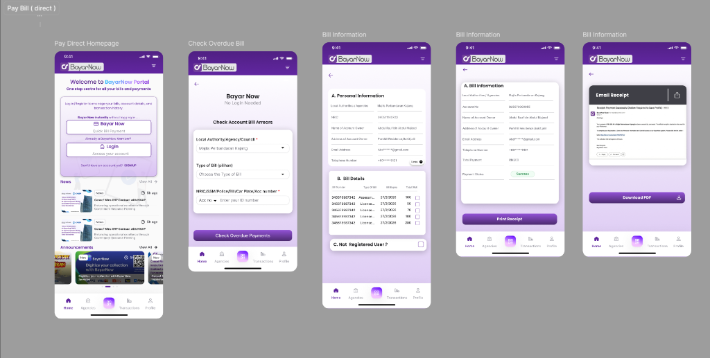
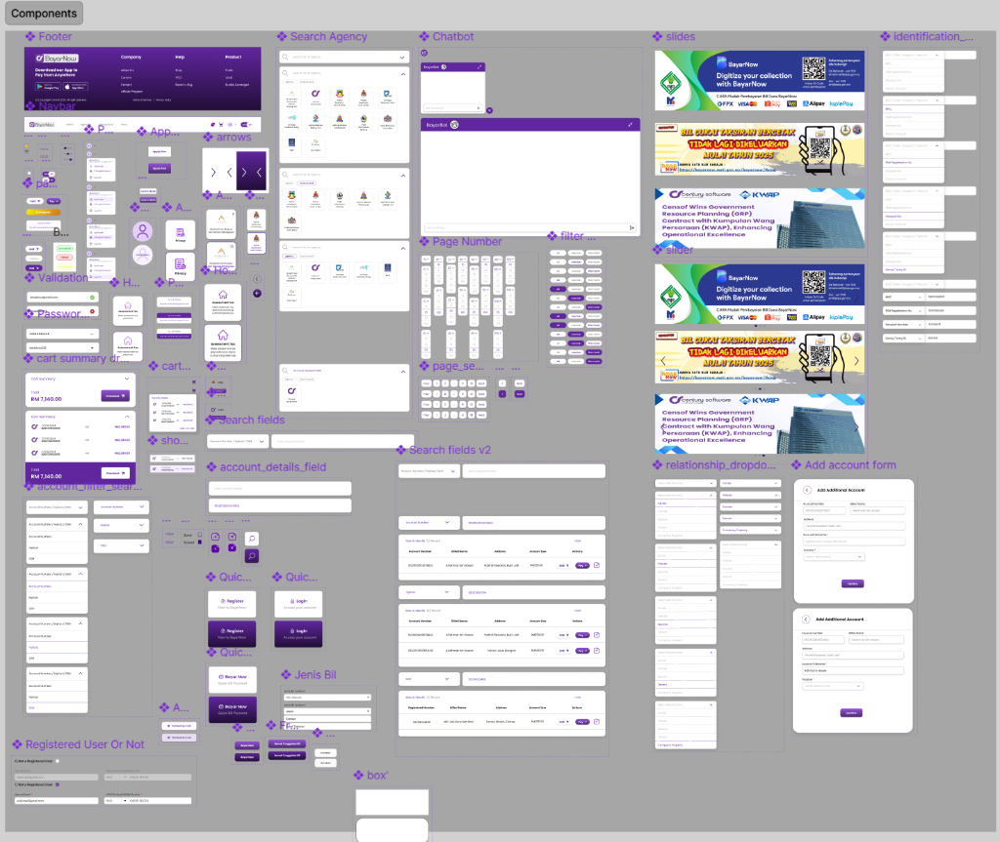

Case study · BayarNow
Pay a bill without logging in
BayarNow is a live government bill payment portal serving public users across Malaysia. During my internship at Century Software I was my team's only UI/UX designer on it. Pay Direct is the part of it that started as my own idea in a meeting.
The idea
Most people open a bill payment portal to do one thing: pay a bill. In a requirements meeting I proposed a flow that lets them do exactly that without logging in at all, with fewer clicks between opening the portal and paying. My supervisor adopted it in place of the original plan.
What I did
- Proposed Pay Direct, a no-login bill payment flow, and took part in gathering its requirements with the CFO, the product manager and my supervisor.
- Wrote its storyboard, documenting the user flows.
- Designed its 5 screens in Figma, on the component library I built to the Malaysian Government Design System (MYDS).
- Presented the prototypes to the board of directors.

Around it
I was not only drawing screens. I implemented the Flutter front end of both portals as a component library in code, wired to their existing back-end APIs, and ran pre-release and regression tests.

Disclaimer: The UI/UX designs, workflows, and concepts showcased here were designed and developed during my professional tenure at Century Software. All intellectual property, proprietary rights, and copyrights for the BayarNow portal belong exclusively to Century Software (M) Sdn Bhd. These materials are presented here strictly for professional portfolio and demonstration purposes.